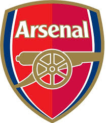
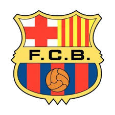

<!--
  Generated template for the ScorePage page.

  See http://ionicframework.com/docs/components/#navigation for more info on
  Ionic pages and navigation.
-->
<ion-header>
  <ion-navbar>
    <ion-title>Score Board</ion-title>
  </ion-navbar>
</ion-header>

<ion-content class="ion-padding">
    <ion-content class="home">
      <ion-grid id="teams">
        <ion-row class="page">
          <div class="team">
              <div class="team1">
                  <br>
                  <ion-grid class="goal">
                      <ion-row>
                        <ion-col >
                          <ion-item style="text-align: left; background-color: transparent;"><h1 style="color: white">{{goal}}</h1></ion-item>
                        </ion-col>
                      </ion-row>
                    </ion-grid>>
                </div>
                <div class="team2">
                  <br>
                  <ion-grid class="goal">
                    <ion-row>
                      <ion-col >
                        <ion-item style="text-align: center; background-color: transparent"><h1 style="color: white">{{goal1}}</h1></ion-item>
                      </ion-col>
                    </ion-row>
                  </ion-grid>
                </div>
          </div>

        </ion-row>
      </ion-grid>
      <ion-row>
        <div id="box1">
            <button ion-button (click)="incrementGoal()" style="background-color:skyblue"> +1 </button>
        </div>
        <div id="box2">
            <button ion-button (click)="incrementGoal1()" style="background-color:skyblue"> +1 </button>
        </div>
      </ion-row>
      <ion-grid id="box3">
        <button ion-button (click)="reset()" style="background-color:skyblue" full> Reset </button>
      </ion-grid>
    </ion-content>
</ion-content>
